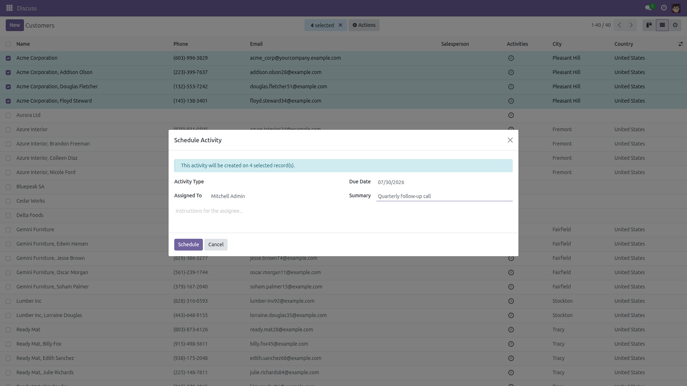

Schedule Activities in Bulk
One form, forty records.
Odoo schedules activities one record at a time. Assigning a follow-up call to forty customers, or a review task on every overdue invoice, means opening forty records. This module adds a Schedule Activity action: select the records, fill the activity once, and it is created on all of them.
Free and open source (LGPL-3), Odoo 14.0 through 19.0.
- One step — activity type, assignee, due date and note applied to the whole selection.
- Respects access rights — activities are only created on records the user may act on.
- Confirmation — a notification tells you how many activities were created.
- Safe on stale selections — records deleted in the meantime are handled with a clear message.
Screenshots

Select the records, choose Actions → Schedule Activity, fill the activity once — it is created on every selected record.
Installation
- Open Apps, search for Schedule Activities in Bulk and click Install.
- Only the standard
mail module is required.
Configuration
- None. The action is available immediately on Contacts; a technical user can bind it to other models via Settings → Technical → Actions → Server Actions bindings.
Usage
- Open a list view, tick the records you want.
- Choose Actions → Schedule Activity in the toolbar.
- Pick the activity type, assignee and due date, add a summary, then click Schedule.
- Each selected record now carries the activity, visible in its chatter and in the assignee's To-Do list.
Version notes
Identical behavior on every supported series (14.0 – 19.0).
License: LGPL-3 · Source on GitHub · Issues and contributions welcome.